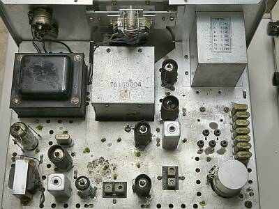
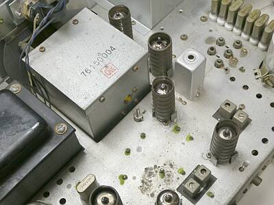
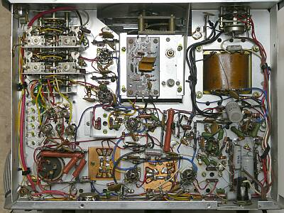
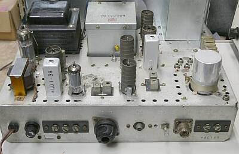

 |
シャーシ上面
極めてシンプルです
真空管７球が見えます
ＲＦ系には、シールドが被せられています
（この使われているシールドが良く錆びる！）
電源トランスが、フロントパネルに近いところに配されているのは珍しい・・・ |
|
|
 |
信号は、上から右を回って下に処理されます
上右に見えているのは、各バンド変換用クリスタル群（２８ＭＨｚバンド、ＪＪＹ１０ＭＨｚ帯は共通で、計７つ）
ＶＦＯ、第一局発 発振部はシールﾄﾞされています
メカニカルフィルタは、東光製
下やや左寄りに見えているのが、４５３.５ＫＨｚＢＦＯクリスタルです |
|
|
 |
シャーシ裏の様子
真ん中の大きな酸化被膜抵抗は、ＶＦＯ電圧を作るためにＢ電圧から電圧降下をさせるためのものです
プリント基板は、東光のメカニカルフィルタを装備するためのものです
ＲＦ回路は、各バンドごとの用意ではなく、２組のコイルで賄ってあります（ゼネカバ受信機風）
|
|
|
 |
リアパネルを含む背面からの様子です
アンテナ入力端子は、Ｍ型以外にワイヤーアンテナ用の端子板も用意されています（Ｍ-Ｒ右横）
左の端子台は、スピーカー接続用（０－８－６００Ω）
真ん中のＲＣＡ-Ｒは、ＶＦＯ出力です |
しばらく通電がなかったものだと想像されます
ＶＦＯの安定度が悪い・・・どころではなく、単一信号を受信しても「ピー」と復調されません
「ビャー」、「ピャー」、「・・・・・」 不規則に何かでＦＭ変調されたように聞こえます
このままでは、とても実用できません（ＡＭ受信は何とかなるか、くらい）
ＶＦＯに関係する「素子」の経年変化に伴う問題と判断し、一晩通電したまま放置し翌朝チェックすると、今度はまともに「ピー」と復調できるようになっていました
以降、その状況は変わらず・・・時には通電してやる必要があります
ＶＦＯ安定度については、良くありません
これは当時の頃から変わっていない実体と思われます
ＶＦＯに供給する電圧は、真空管用のＢ電圧から分圧して、ツェナーダイオードで安定化、１８Ｖをかけてあります
一昔前、ここを例えば三端子レギュレータを使って別給電すれば安定するなどの記事を見たように思いますが、実際に外から安定化した電圧を供給しても、ドリフトの様子は目に見えるほど改善しません
従って、オリジナルのままで良いと判断しました
本気で安定化を望むなら、Ｘ-Ｌｏｃｋのような手法が必要そうに思います（それか、初期ドリフトは無視して、温度補償を頑張る）
そういえば、Ｘ-Ｌｏｃｋを販売していたイギリスの社のサイトが無くなりました |
|
慎重に調整をした結果
| １４．１ＭＨｚ |
|
|
|
ＳＳＢ／ＣＷモード |
０.５μＶ入力のＯＮ／ＯＦＦで、Ｓ／Ｎ１０ｄｂ |
|
ＡＭモード |
２.０μＶ入力時、３０％変調のＯＮ／ＯＦＦで、Ｓ／Ｎ１０ｄｂ |
が得られました
当時の資料では、１．５μＶ以下（Ｓ／Ｎ１０ｄｂ）としか記載がありません
本機では、メカフィルのセンター周波数も、ちゃんと意識して調整する必要があります（ありました！）
余談ですが、簡易な東光製のメカフィルの採用で、本格的な国際のメカフィルで起きる経年変化・・・機構を支えるスポンジの劣化によるトラブルには遭遇しません |